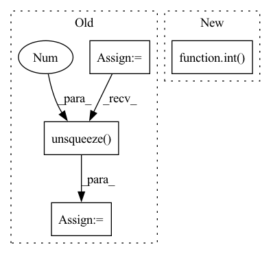

Pattern ID :21837

Before Change
// Extract Y channel lr image data.
lr_image = np.array(lr_image).astype(np.float32)
lr_ycbcr = imgproc.convert_rgb_to_ycbcr(lr_image)
lr_image_y = lr_ycbcr[..., 0]
lr_image_y /= 255.
lr_tensor_y = torch.from_numpy(lr_image_y).to(config.device).unsqueeze(0).unsqueeze(0)
lr_tensor_y = lr_tensor_y.half()
// Extract Y channel bicubic image data.
bic_image = np.array(bic_image).astype(np.float32)
After Change
print(f"Processing `{os.path.abspath(hr_image_path)}`...")
lr_image = Image.open(lr_image_path).convert("RGB")
bic_image = lr_image.resize([int(lr_image.width * config.upscale_factor), int(lr_image.height * config.upscale_factor)], Image.BICUBIC)
hr_image = Image.open(hr_image_path).convert("RGB")
// Extract Y channel lr image data
In pattern: SUPERPATTERN
Frequency: 3
Non-data size: 4
Instances
Fragment ID: 69562932
Project Name: lornatang/espcn-pytorch
Commit Name: 3d7da32ace2da2b908bad2a32243b464f206e72a
Time: 2021-11-30
Author: liuchangyu1111@gmail.com
File Name: validate.py
M Class Name: AnonimousClass
N Class Name: AnonimousClass
M Method Name: main(0)
N Method Name: main(0)
M Parent Class:
N Parent Class:
M File Name: validate.py
N File Name: validate.py
M Start Line: 65
M End Line: 95
N Start Line: 63
N End Line: 88
'>
Before Change
other_idx = torch.where(condition1, other_idx, other_idx1) // (C, batch_size)
min_values, min_idx = torch.where(other_idx, values, values.max()).min(dim=-1)[0] // (C)
min_labels = labels.gather(dim=1, index=min_idx.unsqueeze(1)).flatten() // (C)
min_labels_counts = labels.eq(min_labels.unsqueeze(1)).int().sum(dim=1) // (C)
condition2 = min_labels.ge(self.n_samples - 2) // todo: Not sure: self.n_samples -> self.seed_num
idx_list = condition2.nonzero()[:self.top_n_neurons]
neuron_dict[layer] = {int(idx): int(min_labels[idx]) for idx in idx_list}
After Change
idx_list = condition2.nonzero().flatten().tolist()
idx_list = sorted(idx_list, key=lambda idx: float(values[idx][mode_idx[idx]].min()))[:self.top_n_neurons]
neuron_dict[layer] = {int(idx): int(mode_labels[idx]) for idx in idx_list}
prints("{green}{layer:<20}: {reset}".format(layer=layer, **ansi), indent=4)
prints(neuron_dict[layer], indent=8)
return neuron_dict
'>
Fragment ID: 69562934
Project Name: ain-soph/trojanzoo
Commit Name: 1684c28ef38502abb83d37beb845b69007e33274
Time: 2020-07-07
Author: ain-soph@live.com
File Name: trojanzoo/defense/backdoor/abs.py
M Class Name: ABS
N Class Name: ABS
M Method Name: find_min_max(3)
N Method Name: find_min_max(3)
M Parent Class: Defense_Backdoor
N Parent Class: Defense_Backdoor
M File Name: trojanzoo/defense/backdoor/abs.py
N File Name: trojanzoo/defense/backdoor/abs.py
M Start Line: 210
M End Line: 225
N Start Line: 234
N End Line: 254
'>
Before Change
norm2 = norm1
else:
nelec2 = input2.shape[1]/ndim
input2 = input2.view(-1,nelec2,ndim)
norm2 = (input2**2).sum(-1).unsqueeze(-1)
dist = norm1 + norm2.transpose(1,2) -2.0 * torch.bmm(input1,input2.transpose(1,2))
return dist
After Change
ndim = 3
nelec = int(input.shape[1]/ndim)
input = input.view(-1,nelec,ndim)
norm = (input**2).sum(-1).unsqueeze(-1)
dist = norm + norm.transpose(1,2) -2.0 * torch.bmm(input,input.transpose(1,2))
'>
Fragment ID: 69562930
Project Name: nlesc-jcer/qmctorch
Commit Name: 367e2652236e20fd44c930c0364147f2315f419c
Time: 2019-06-26
Author: nicolas.gm.renaud@gmail.com
File Name: pyCHAMP/wavefunction/wave_modules.py
M Class Name: ElectronDistance
N Class Name: ElectronDistance
M Method Name: forward(2)
N Method Name: forward(3)
M Parent Class: torch.autograd.Function
N Parent Class: torch.autograd.Function
M File Name: pyCHAMP/wavefunction/wave_modules.py
N File Name: pyCHAMP/wavefunction/wave_modules.py
M Start Line: 51
M End Line: 75
N Start Line: 52
N End Line: 54